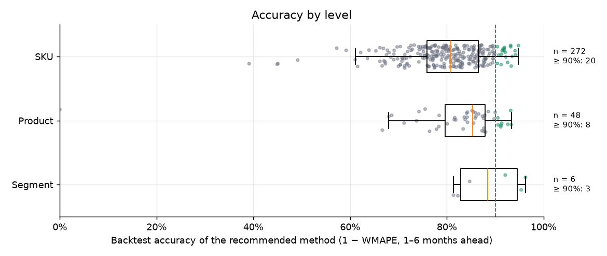

flowchart TB A[Sales data] --> B[06 Backtest<br/>5 methods per series] B --> C[06b Circuit breaker<br/>07 Champion-challenger<br/>07b Bias factors] C --> D[01 Total] D --> E[02 Product] D --> F[03 Segment] E --> G[04 SKU] E & F & G --> H[07c Finalize<br/>route + shape + bias<br/>+ reconciliation] H --> I[Production curve<br/>and dashboard]
S&OP demand forecasting: a hierarchical ARIMA/ETS pipeline, from the Total to the SKU
Hugo Batista da Silva
Note
Language: Python (statsforecast, pandas, joblib) and Plotly · Type: work project, rebuilt with synthetic data · Code: github.com/batistugo/sop-demand-forecasting
About the project
In S&OP (Sales and Operations Planning), the company agrees every month on how much it expects to sell, so that purchasing, production and stock follow the same number. At a textile company, I built and run the statistical pipeline that produces the starting point of this process: every month it forecasts the next 28 months of every item of the catalog, with 80% and 95% prediction intervals. The business areas (sales, purchasing, production…) then adjust this baseline, item by item, in an S&OP web app.
The company data cannot be published, so for this portfolio the whole pipeline was rebuilt with synthetic data that keeps the structure of the original (columns, hierarchy and business rules), with fictitious names and stronger seasonality than the real series, to make the behaviour of each method easy to see.
Scale and granularities
The same engine forecasts the four levels of the product hierarchy. A SKU is a fabric in one colour, so the lowest level has thousands of small, noisy and sometimes intermittent series.
| Level | Series in production | Series in the synthetic data | What is forecast |
|---|---|---|---|
| Total | 1 | 1 | all sales |
| Segment | 12 | 6 | fabric family (linen, viscose, knit…) |
| Product (“parent”) | about 490 | 48 | one fabric |
| SKU (“child”) | about 3,600 | 300 | fabric × colour |
The synthetic data covers January 2022 to September 2026 (57 months and 70,219 order lines), and the forecast starts in October 2026.
Interactive dashboard
The dashboard below replicates the forecast screens of the S&OP front end (in production, a React + Plotly app fed by an API), now fed by the outputs of the pipeline on the synthetic data. It opens on the most accurate SKU of the backtest. You can:
- choose the level and filter segment → product → SKU;
- compare the ⭐ production curve (with 80% and 95% intervals) with the raw Combined, ARIMA/ETS and Top-Down curves;
- read the actual sales of the last 6/12/18 months against the forecast of the next 6/12/18;
- see the backtest accuracy of each method, and in the Accuracy tab, the ranking of all series of a level.
How the pipeline works
Each stage is a standalone script that reads the parquet files of the previous one. The backtest and the model tuning run before the forecasts, because they decide the models from the sales data; this way, a single monthly run already delivers the best forecast.
The Total is fitted once; the products and segments use its forecast for the top-down, and the SKUs use the forecast of their product. At the end, 07c builds the production curve of each series: the method recommended by the backtest, with a seasonal shape when needed, the bias factor and the hierarchical reconciliation.
The most interesting functions
Automatic choice between ARIMA, ETS and intermittent models
fit_best_model decides the model family of each series by its share of months without sales. Dense series go to AutoARIMA, the Hyndman–Khandakar stepwise search (the same algorithm as forecast::auto.arima in R, here from statsforecast), with AutoETS as fallback. Sparse series are kept away from ARIMA, which explodes on series that are almost all zeros: in the aggregate levels they go to AutoETS and, at SKU level, to the best intermittent-demand model (Croston, SBA or TSB) by in-sample error. Seasonal terms are only allowed with at least 24 months of history.
def fit_best_model(y, h=H_DEFAULT, allow_seasonal=True, prop_zero=None,
manual_model=None, intermittent_threshold=INTERMITTENT_PROP_ZERO):
season_length = 12 if allow_seasonal else 1 # sazonal só com >= 24 meses
if manual_model is not None: # override do tuning (07)
m, name = _fit_manual_model(y, manual_model, season_length)
if m is not None:
return m, name
if prop_zero >= PROP_ZERO_THRESHOLD: # série ESPARSA (>= 30% de zeros)
if INTERMITTENT_ENABLE and prop_zero >= intermittent_threshold:
m, name = _fit_best_intermittent(y) # Croston / SBA / TSB (só no SKU)
if m is not None:
return m, name
m, name = _fit_auto_ets(y, season_length) # agregados: ETS
if m is None:
m, name = _fit_auto_arima(y, season_length) # ARIMA só se o ETS falhar
return m, name
m, name = _fit_auto_arima(y, season_length) # série DENSA: AutoARIMA...
if m is None:
m, name = _fit_auto_ets(y, season_length) # ...com fallback AutoETS
return m, name
def _fit_auto_arima(y, season_length):
approx = len(y) > ARIMA_APPROX_MIN_OBS # aproximação de AIC só em série longa
m = AutoARIMA(season_length=season_length, approximation=approx,
stepwise=True, allowdrift=True, allowmean=True).fit(y=y)
return m, _arima_name(m) # ex.: "ARIMA(0,1,1)(0,1,1)[12]"
def _fit_auto_ets(y, season_length):
m = AutoETS(season_length=season_length, model="ZZZ").fit(y=y) # erro, tendência e
return m, _ets_name(m) # sazonalidade escolhidos por AICAround this choice, forecast_series prepares the series: it aligns it to the global monthly grid (a month without sales becomes 0), keeps the recent zeros so the model sees that an item stopped selling, anchors the forecast at the last closed month + 1 (an item whose last sale was a year ago is not forecast “from the past”) and caps prediction intervals that explode.
Tail cleaning
An ARIMA fitted on a short and noisy series can produce a good first few months and a useless tail: it goes negative, explodes, or becomes a flat line. Three functions deal with this:
flag_bad_tailmarks a forecast whose tail (from month 5 on) is mostly negative or grows/falls explosively (last value more than 5 to 8 times the first, with large month-to-month jumps);flat_tail_startfinds where a flat tail starts (at least 6 final months within 1% of the last value);combine_onebuilds the Combined curve: it keeps the head of the ARIMA/ETS forecast and replaces a bad tail by the top-down forecast, or rescales a flat tail by the top-down shape, keeping the ARIMA level.
def flag_bad_tail(fc_df, start_bad=5, neg_share_thr=0.5, explode_factor=8.0, high_jump_factor=5.0):
m = fc_df["mean"].to_numpy(dtype=float)
tail = m[start_bad - 1:]
neg_share = float(np.mean(tail <= 0)) # cauda negativa
slope = float(np.polyfit(np.arange(len(tail)), tail, 1)[0]) # tendência da cauda
ratio_last_first = abs(tail[-1] / m[0])
mean_local_ratio = np.mean(np.abs(np.diff(tail) / np.maximum(tail[:-1], 1e-6)))
if neg_share >= neg_share_thr:
return True
if slope > 0 and ratio_last_first > high_jump_factor and mean_local_ratio > 1.5:
return True # explode para cima
if slope < 0 and ratio_last_first > explode_factor and mean_local_ratio > 1.5:
return True # explode para baixo
return False
def combine_one(a, p_prop, id_value, w_fut, tot_fc_dt, id_col, swap_bad="tail", ...):
# 1) cauda ruim → troca a partir do 5º mês pelo Top-Down (pesos × projeção do nível de cima)
if flag_bad_tail(ap, start_bad=bad_start):
td = build_td_fc(id_value, ap["data"], ap, w_fut, tot_fc_dt, id_col=id_col)
ap.loc[idx_cauda, IC] = td.loc[idx_cauda, IC]
return ap
# 2) sem cauda plana → mantém o ARIMA/ETS como está
tail_start = flat_tail_start(ap["mean"], min_run=6, rel_tol=0.01)
if not is_const_all(ap["mean"]) and tail_start is None:
return ap
# 3) projeção constante ou cauda plana → mantém o NÍVEL do ARIMA e usa a FORMA do Top-Down
k = media_arima_cauda / media_topdown_cauda
ap.loc[idx_cauda, "mean"] = k * ap.loc[idx_cauda, "fc_vendas"]
...Top-down weights
The top-down curve of an item is its share of the forecast of the level above. build_topdown_weights blends the item’s share in each month of the year (local seasonality, weight 0.6) with its global share (weight 0.4) and multiplies by a momentum (last 3 months over the 3 before, clipped to [0.8, 1.2]), then normalizes the weights to add up to 1 in each future month. At SKU level the level above is the product, so the colours divide the product forecast.
Shape for straight-line forecasts
Sometimes the plain ARIMA wins the backtest but forecasts a straight line: the level is reliable, but the curve says nothing about the seasonal peaks that purchasing and production need. cv_detrend measures the lack of shape (the coefficient of variation of the residual after removing a linear trend, so a constant and a diagonal line both score about 0), perfil_sazonal estimates the monthly index of the item and aplicar_perfil imposes this shape while keeping the ARIMA mean over the horizon. The profile comes from the item itself or, if its history is short or not seasonal, from its product or its segment. These “seasonalized” curves enter the backtest as two extra methods.
Choosing the production method of each series
The backtest refits every method at 6 rolling origins and compares 1 to 6 months ahead with the real sales. The recommended method is the one with the lowest WMAPE per horizon (the mean of the WMAPE of each step ahead, so that h = 1, present in all origins, does not dominate). Two extra rules: a method with shape within 3 points of the best is preferred to a flat line, and close cases (within 3 points) are decided by the smallest bias.
A pipeline that adjusts itself
- Champion–challenger (
07_tuning.py): on the high-volume series with the worst error, a fixed set of ARIMA/SARIMA orders challenges AutoARIMA in the same backtest; a challenger that wins by at least 3 points (in the pooled WMAPE and in the WMAPE per horizon) is applied automatically, without manual approval. - Circuit breaker (
06b_circuit_breaker.py): each cycle saves the applied forecast and a “shadow” AutoARIMA forecast; when the months are realized, an override that performed worse than the shadow is reverted and put on cooldown. - Bias correction (
07b_bias.py): where the recommended method has a relevant bias (≥ 15%) on a relevant volume, the forecast is multiplied by 1 / (1 + bias), clipped to [0.5, 1.5]. - Reconciliation (
07c_finalizar.py): the levels are made coherent (products and segments add up to the Total, SKUs add up to their product) with one multiplier per month, which keeps the shape of each series.
Results on the synthetic data
Backtest with 6 rolling origins (April to September 2026), 1 to 6 months ahead. Accuracy is 1 − WMAPE of the method chosen for production:
| Level | Series evaluated | Median accuracy | Accuracy ≥ 90% | Accuracy ≥ 80% |
|---|---|---|---|---|
| Total | 1 | 87.8% | – | 1 |
| Segment | 6 | 88.4% | 3 | 6 |
| Product | 48 | 85.3% | 8 | 36 |
| SKU | 272 | 80.9% | 20 | 146 |

20 of the 272 SKUs evaluated are forecast with more than 90% accuracy, even though each SKU is a small slice of the total: these are the main colours of products with a stable seasonal pattern, where the seasonal ARIMA of the product and the colour shares of the top-down capture almost all the signal. At the other end are the small colours, where the monthly quantity depends on a few orders. The absolute values depend on how much noise the synthetic generator puts in each series (the real series are noisier); what the project shows is the machinery that chooses, for each series, the method that works best for it.
Models chosen automatically. In this run, AutoARIMA picked a seasonal ARIMA for the Total (ARIMA(0,1,0)(1,1,0)[12]), for all 6 segments and for 44 of the 48 products. At SKU level, 241 series got a seasonal ARIMA, 53 a non-seasonal ARIMA (colours with a short history or with the seasonality drowned by noise) and 6 an intermittent-demand model (colours with many months without sales). No series went to ETS, because none of the aggregate synthetic series is sparse; in the real data, where many products have long gaps, about half of the products end up on ETS and most SKUs on intermittent-demand models. The plain ARIMA is also rarely the method that goes to production: at SKU level, the backtest picked the Top-Down for 126 SKUs, the Combined curve for 102 and a seasonalized curve for 41.
In production
In the company, the pipeline reads the sales model from the data warehouse and runs as an Azure Container Apps Job: monthly by cron and on demand, when someone clicks “Forecast” in the S&OP app. The state that must survive between runs (model overrides, cooldown, bias factors and snapshots for the circuit breaker) lives on a persistent file share; a file lock prevents two runs at the same time, secrets are masked before any line reaches the log, and the parquet files and the logs go to a Blob Storage read by the API that feeds the front end.
Code
The full pipeline, the synthetic data generator, the dashboard and the unit tests are in the repository.